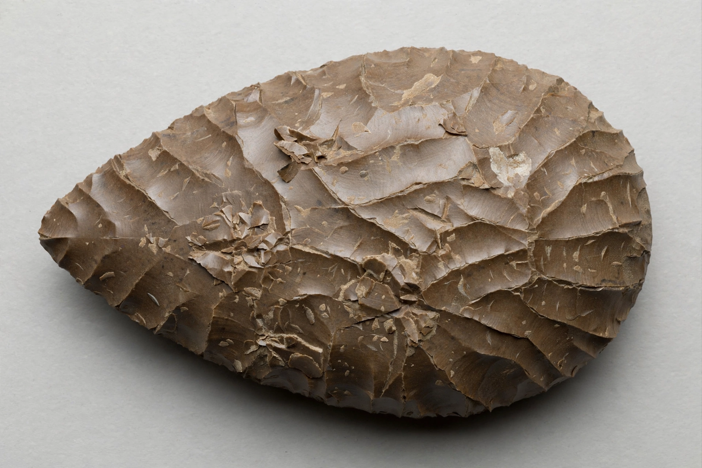

Acheulean

| Acheulean industry | |
| Period | Lower Palaeolithic, c. 1.76 million – 130,000 years ago |
|---|---|
| Named after | Saint-Acheul, Amiens, France |
| Signature tools | Handaxes, cleavers, picks |
| Associated hominins | Homo erectus, Homo heidelbergensis |
Acheulean (also spelled Acheulian) is an archaeological industry of stone tool manufacture characterised by large, symmetrical, bifacially worked tools — especially the handaxe — produced during the Lower Palaeolithic across Africa, much of Asia, and Europe. Named by Gabriel de Mortillet in 1872 after the type site of Saint-Acheul near Amiens in northern France, it succeeded the simpler Oldowan industry and persisted for well over a million and a half years.
Chronology and distribution
The oldest Acheulean assemblages, from Kokiselei in Kenya and Konso in Ethiopia, date to about 1.76 million years ago and are associated with Homo erectus. The technology spread with that species into the Levant, India, and eventually temperate Europe. Regions east of the "Movius Line" — most of East and Southeast Asia — long appeared to lack handaxes, a pattern attributed to raw-material constraints and to the possible use of bamboo tools.
Technology
Handaxes were typically shaped by striking flakes from both faces of a core or large flake, progressing from hard stone hammers to soft hammers of antler, bone, or wood that allowed finer thinning and remarkable symmetry. Producing a standard teardrop or ovate form required planning, foresight, and the mental template of a desired end product — capabilities often taken as evidence of a substantial cognitive advance over the Oldowan.
Stasis and change
The Acheulean is famous for its conservatism: handaxe forms changed very slowly for a million years. Later Acheulean assemblages (from about 600,000 years ago) show finer workmanship and the beginnings of prepared-core (Levallois) techniques that would define the Middle Palaeolithic of Neanderthals.
See also: Homo habilis